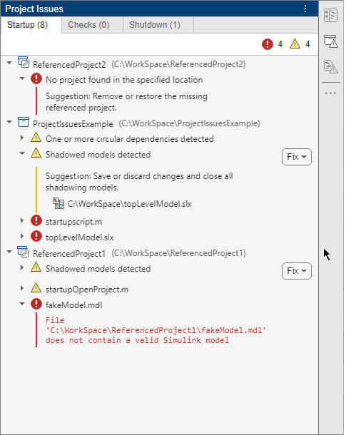
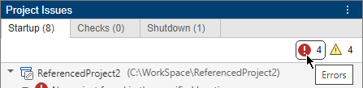
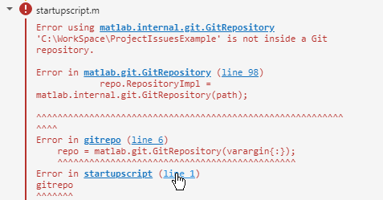
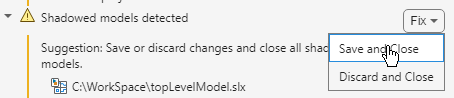
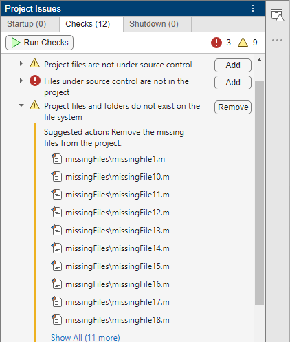

Run Project Checks
Every time you open and close a project, the project automatically runs startup and shutdown checks to ensure the project environment is configured to set up and tear down correctly. You can also manually run additional integrity checks at any time to identify problems such as missing files, unsaved files, or files not under source control.
Before you share your project with others, review and fix issues that the project checks flag.
To verify that all required files, toolboxes, and external libraries are available or installed, run a dependency analysis instead. For more information, see Analyze Project Dependencies.
Project Startup
When you open a project, to set up the environment, the project runs these tasks in order:
Start Simulink®, if configured in Project Settings.
For every project in the project hierarchy, starting from the lowest-referenced project to the top-level project, the software runs these tasks.
Recreate missing project path folders.
Add the configured project folders to the MATLAB® search path.
Set up the Simulink cache and the code generation folders, if set in Project Settings.
Identify shadowed model files. For more information, see Manage Shadowed and Dirty Model Files and Other Project Files (Simulink).
Run the configured project startup files in the order you specify in Project Settings.
Refresh Simulink customizations, if configured in Project Settings.
The project lists the issues that occur during project startup in the Startup tab of the Project Issues panel. The Project Issues panel only opens when issues occur on project startup or shutdown.
Investigate and Resolve Startup Checks Issues
When you open a project, the startup checks look for issues related to path management, errors and warnings in project startup files, missing project references, referenced projects that introduce circular dependencies, and shadowed models. If you have multiple projects in the hierarchy, the Startup tab groups the issues by project.
This figure shows several issues occurring on the top-level project startup. The issues include a missing referenced project, a referenced project that introduces a circular dependency, shadowed and corrupted files, and errors and warnings in the code in the project startup scripts.

You can filter issues using the Errors and Warnings quick filters. You can also temporarily clear an issue by right-clicking the issue and selecting Clear Issue.

To fix the problems flagged by the startup checks, follow the suggested action listed under every issue in the panel.
For issues related to errors and warnings in MATLAB scripts, the checks do not suggest fixes but print the detailed error messages, including the line numbers.
Click the line number to open the script and identify where the issue is introduced.

When possible, the checks provide automatic fixes. To apply an automatic fix, click the button that appears next to the failing check.
For example, this figure shows a startup check warning about shadowed models. The check provides an automatic fix to close the shadowing models.

Run Project Integrity Checks
To run checks for a project, in the Project toolstrip, click Project Issues. In the Project Issues panel, in the Checks tab, click Run Checks. The checks find problems with project integrity such as missing files, unsaved files, or files not under source control. The Project Issues panel only lists the failing checks and suggests fixes. If it is possible to automatically fix an issue, you see a button next to the failing check.

To fix the issues that the integrity checks flag, follow the instructions in this table. You can also temporarily clear an issue by right-clicking the issue and selecting Clear Issue.
List of project checks
| Check Type | Check Description | Issue Type | Fix |
|---|---|---|---|
Checks for projects under source control Note Running checks related to source control requires a
full clone of the repository. In a CI/CD pipeline, some
repository hosting platforms such as GitLab® default to a shallow clone with a depth of
| Project definition files are not under source control. | Warning | Add the listed project definition files to source control. In the Checks tab, next to the failing check, click Add. |
| Project files are not under source control. | Warning | Add the listed project files to source control. In the Checks tab, next to the failing check, click Add. | |
| Files under source control are not in the project. | Error | Add the listed files to the project. In the Checks tab, next to the failing check, click Add. | |
| Project file checks | Project files and folders do not exist on the file system. | Warning | If you no longer need the files, remove them from the project. In the Checks tab, next to the failing check, click Remove. If you still need the missing files, manually recreate them or restore them using source control. |
| Folders on the MATLAB search path are not on the project path. | Warning | Add the listed folder to the project path. In the Checks tab, next to the failing check, click Add. | |
| Projects in subfolders are not referenced by this project. | Warning | Add projects in subfolders as referenced projects. In the Checks tab, next to the failing check, click Add. | |
| Project files have unsaved changes. | Warning | Save or discard changes to the listed files. In the Checks tab, next to the failing check, click Fix. Then, select Save Changes or Discard Changes. | |
| Models in the project have mismatching files saved in a different format (MDL or SLX). | Warning | For example, when you resave an MDL project file to an SLX file, the check flags if the resaved file is not added to the project and the original file that no longer exists is still in the project. To fix this check, update the project to include the newly saved SLX model instead of the original MDL file. In the Checks tab, next to the failing check, click Update. | |
| Project definition files checks | Project has duplicate labels. | Error | Remove one of the duplicate labels. In the Checks tab, next to the failing check, click Remove. |
| Project has missing built-in labels. | Error | Restore the missing built-in labels. In the Checks tab, next to the failing check, click Restore. | |
| Derived files in project checks | Out-of-date P-code files. | Warning | Regenerate the listed P-code files. In the Checks tab, next to the failing check, click Update. The
check also detects outdated protected Simulink models ( |
| Project contains slprj or sfprj folders. | Warning | Remove the slprj or
sfprj folder from the project. In the
Checks tab, next to the failing check,
click Remove. |
Project Shutdown
When you close a project, to reset the environment, the project runs these tasks in order:
For every project in the project hierarchy, starting from the top-level project to the lowest-referenced project, the software runs these tasks.
Run the configured project shutdown files in the order you specified in the Project Settings.
Close open project files and prompt if files have unsaved changes. For more information, see Manage Open Files When Closing Project.
Tear down the Simulink cache and the code generation folders, if configured in Project Settings.
Remove the configured project folders from the MATLAB search path.
Refresh Simulink customizations, if configured in Project Settings.
The project lists the issues that occur during project shutdown in the Shutdown tab of the Project Issues panel. The Project Issues panel only opens when issues occur on project startup or shutdown.
Investigate and Resolve Shutdown Checks Issues
When you close a project, the shutdown checks look for issues related to path management, errors and warnings in project shutdown files, and missing shutdown files. If you have multiple projects in the hierarchy, the Shutdown tab groups the issues by project.
You can filter issues using the Errors and Warnings quick filters. You can also temporarily clear an issue by right-clicking the issue and selecting Clear Issue.
To fix the problems flagged by the shutdown checks, you must first reopen the project. The Shutdown tab remains available when you reopen the project. Then, follow the suggested action listed under every issue in the panel.
For issues related to errors and warnings in MATLAB scripts, the checks do not suggest fixes but print the detailed error message, including the line numbers.
Click the line number to open the script and identify where the issue is introduced.
When possible, the checks provide automatic fixes. To apply an automatic fix, click the button that appears next to the failing check.
See Also
currentProject | listStartupIssues | listShutdownIssues | runChecks